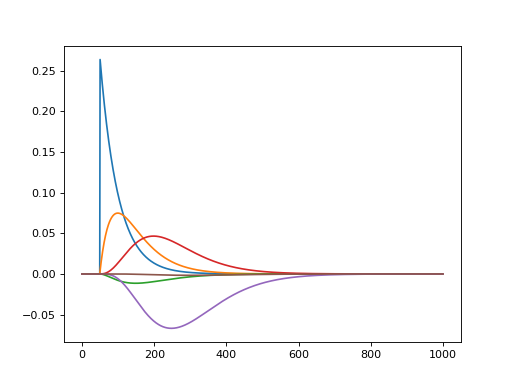

convis classes and modules¶
convis.base¶
Convis base classes¶
Convis extends PyTorch by adding some methods to torch.nn.Module and calling it a Layer.
-
class
convis.base.Layer[source]¶ Base class for modules, layers and models.
convis.Layer is a torch.nn.Module with some added functionality:
import convis import torch.nn.functional as F class Model(convis.Layer): def __init__(self): super(Model, self).__init__() self.conv1 = convis.filters.Conv3d(1, (20,1,1)) self.conv2 = convis.filters.Conv3d(1, (1,10,10)) def forward(self, x): x = F.relu(self.conv1(x)) return F.relu(self.conv2(x))
Just as Module`s, `Layer`s can include other `Layer`s or `Module`s (ie. its `sublayers). Variable`s, `Parameter`s and `State`s that are attributes of a Layer or its `sublayers will be registered and can be collected according to their class.
All registered Variables (including Parameters and States), will be moved to the corresponding device when calling .cuda() or .cpu().
In contrast to many methods of torch.Tensors, Layer methods are always in-place! Using .cuda() or .float() will return a reference to the original model and not a copy.
See also
torch.nn.Module- torchs layer class
Examples
>>> import convis >>> import torch.nn.functional as F >>> >>> class Model(convis.Layer): >>> def __init__(self): >>> super(Model, self).__init__() >>> self.conv1 = convis.filters.Conv3d(1, (20,1,1)) >>> self.conv2 = convis.filters.Conv3d(1, (1,10,10)) >>> def forward(self, x): >>> x = F.relu(self.conv1(x)) >>> return F.relu(self.conv2(x))
Attributes
_use_cuda (bool) set_optimizer (_OptimizerSelector objet that allows tab completion to select an optimizer) Methods
cuda(device=None) move the model to the gpu cpu() move the model to the cpu run(the_input, dt=None) execute the model, using chunk sizes of dt parse_config(conf) optimize(inp,outp,dt=None) use the selected optimizer to fit the model to return outp to the input inp. Accepts a chunk length dt register_state(name, value) registers an attribute name to be a state variable state() returns the current state of the model (recursively for all submodules) set_state(d) set all state parameters defined in dictionary d to the corresponding values. push_state() pushes the current state on a stack pop_state() pops the last state from the stack and sets all state variables to the corresponding values. -
cuda(device=None)[source]¶ Moves the model to the GPU (optionally with number device). returns the model itself.
-
optimize(inp, outp, optimizer=None, loss_fn=<function <lambda>>, dt=None, t=0)[source]¶ Runs an Optimizer to fit the models parameters such that the output of the model when presented inp approximates outp.
To use this function, an Optimizer has to be selected:
model.set_optimizer(torch.optim.SGD(lr=0.01)) model.optimize(x,y, dt=100)
or:
model.set_optimizer.SGD(lr=0.01) # uses optimizers from torch.optim model.optimize(x,y, dt=100)
It is important to specify a chunk length dt, if the complete input does not fit into memory.
-
parse_config(config, prefix='', key='retina_config_key')[source]¶ Loads parameter values from a configuration (RetinaConfiguration or dict).
-
class
convis.base.Output(outs, keys=None)[source]¶ This object provides a container for output numpy arrays which are labeled with theano variables.
The outputs can be queried either by sorted order (like a simple list), by the theano variable which represents this output, the name of this variable or the full path of the variable. To make this meaningfull, provide a name to your output variables.
In the case of name collisions, the behavior of OrderedDict will use the last variable added.
The full path names of all variables are also added to this objects __dict__, allowing for tab completion.
Methods
-
class
convis.base.Runner(model=None, input=None, output=None, goal=None)[source]¶ Keeps track of the input and output of a model and can run or optimize it in a separate thread.
model has to be a convis.Layer
input should be a convis.streams.Stream that contains input data output should be a convis.streams.Stream that accepts new data when using optimize, goal has to have the same length as input and the same behaviour at the end of the stream (repeating or stop)
Methods
-
convis.base.prepare_input(a, dims=5, cuda=False, volatile=False, requires_grad=False)[source]¶ Utility function to broadcast input to 5 dimensions, make it a Tensor, wrap it in a Variable and optionally move it to the GPU.
Short hand for:
import torch a_var = torch.autograd.Variable(torch.Tensor(a[None,None,:,:,:]), requires_grad=True).cuda() from convis.base import prepare_input a_var = prepare_input(a, cuda=True, requires_grad=True)
Simple convis.filters¶
-
class
convis.filters.Conv3d(in_channels=1, out_channels=1, kernel_size=(1, 1, 1), bias=True, *args, **kwargs)[source]¶ Does a convolution, but pads the input in time with previous input and in space by replicating the edge.
Arguments:
- in_channels
- out_channels
- kernel_size
- bias (bool)
Additional PyTorch Conv3d keyword arguments:
- padding (should not be used)
- stride
- dilation
- groups
Additional convis Conv3d keyword arguments:
- time_pad: False (enables padding in time)
- autopad: False (enables padding in space)
To change the weight, use the method set_weight() which also accepts numpy arguments.
Attributes
Methods
-
class
convis.filters.Delay(delay=0, length=0)[source]¶ Causes the input to be delayed by a set number of time steps.
d = Delay(delay=100) d.run(some_input,10)Optionally, a length of input can also be prependet similar to the TimePadding Layer.
d = Delay(delay=100,length=10) # additionally preprends 10 timesteps of each previous chunk d.run(some_input,10)When the size of the image is changed, the previous inputs do not match, so an Exception is raised. To avoid this, call .clear_state(). This method is recursive on all convis.Layers, so you only have to call it on the outermost Layer. If you want to store your history for one set of images, do some computation on other images and then return to the previous one, you can use .push_state() and .pop_state().
Attributes
Methods
-
class
convis.filters.TimePadding(length=0)[source]¶ Remembers references to previous time slices and prepends the input with length many time steps from previous calls.
If the size of the image is changed without removing the state first, an Exception is raised.
To avoid this, call .clear_state(). This method is recursive on all convis.Layers, so you only have to call it on the outermost Layer. If you want to store your history for one set of images, do some computation on other images and then return to the previous one, you can use .push_state() and .pop_state().
Attributes
Methods
-
class
convis.filters.VariableDelay(delays=None)[source]¶ This Layer applies variable delays to each pixel of the input.
Example:
v = VariableDelay(delays = d)
At the moment, the delays do not provide a gradient.
Possible future feature if requested: variable delay per pixel, channel and batch dimension.
Attributes
Methods
-
class
convis.filters.simple.SmoothConv(n=3, tau=0.1, spatial_filter=(10, 10))[source]¶ A convolution with temporally smoothed filters. It can cover a long temporal period, but is a lot more efficient than a convlution filter of the same length.
Each spatial filter .g[n] is applied to a temporally filtered signal with increasing delays by convolving multiple recursive exponential filters.
The length of the filter depends on the number of temporal components and the time constant used for the delays.
Each exponential filter .e[n] can have an individual time constant, giving variable spacing between the filters.
By default, the time constants are set to not create a gradient, so that they are not fittable.
To show each component, use get_all_components(some_input)
import matplotlib.pyplot as plt import numpy as np import convis s = convis.filters.simple.SmoothConv(n=6,tau=0.05) inp = np.zeros((1000,1,1)) inp[50,0,0] = 1.0 inp = convis.prepare_input(inp) c = s.get_all_components(inp) convis.plot_5d_time(c,mean=(3,4)) c = c.data.cpu().numpy()
(Source code, png, hires.png, pdf)
See also
convis.filters.Conv3d- A full convolution layer
Attributes
Methods
{kind=link}
{kind=link}
convis.utils¶
-
convis.utils.plot_5d_matshow(w, border=True, dims=[(0, 1, 3), (2, 4)], border_val=0.0, **kwargs)[source]¶ Plots a 5d Tensor as a concatenation of spatial maps.
The 5 dimensions have to be separated into two sets which will correspond to the two dimensions of the image.
plot_5d_matshow(w, dims=[(0,3),(2,1,4)])Other arguments and keyword arguments are passed to matplotlib.pylab.plot()
-
convis.utils.plot_5d_time(w, lsty='-', mean=(), time=(2, ), *args, **kwargs)[source]¶ Plots a line plot from a 5d tensor.
Dimensions in argument mean will be combined. If mean is True, all 4 non-time dimensions will be averaged.
Other arguments and keyword arguments are passed to matplotlib.pylab.plot()
convis.streams¶
-
class
convis.streams.InrImageStreamer(filename, z=False, slice_at=None)[source]¶ Reads a large inr file and is an iterator over all images.
By default, the z dimension is ignored. Setting z to True changes this, such that each image is 3d instead of 2d.
Attributes
Methods
-
class
convis.streams.SequenceStream(sequence=array([], shape=(0, 50, 50), dtype=float64), size=None, pixel_per_degree=10, max_frames=5000)[source]¶ 3d Numpy array that represents a sequence of images
Attributes
Methods
-
class
convis.streams.Stream(size=(50, 50), pixel_per_degree=10, t_zero=0.0, t=0.0, dt=0.001)[source]¶ Stream Base Class
Streams have to have methods to either get() or put a frame.
Attributes
Methods
convis.tests¶
Virtual Retina Simulator¶
convis.filters.retina¶
-
class
convis.filters.retina.Bipolar(**kwargs)[source]¶ Example Configuration:
'contrast-gain-control': { 'opl-amplification__Hz': 50, # for linear OPL: ampOPL = relative_ampOPL / fatherRetina->input_luminosity_range ; # `ampInputCurrent` in virtual retina 'bipolar-inert-leaks__Hz': 50, # `gLeak` in virtual retina 'adaptation-sigma__deg': 0.2, # `sigmaSurround` in virtual retina 'adaptation-tau__sec': 0.005, # `tauSurround` in virtual retina 'adaptation-feedback-amplification__Hz': 0 # `ampFeedback` in virtual retina },
See also
RetinaAttributes
opl-amplification__Hz - for linear OPL: ampOPL = relative_ampOPL / fatherRetina->input_luminosity_range ; ampInputCurrent in virtual retina bipolar-inert-leaks__Hz: 50 gLeak in virtual retina adaptation-sigma__deg: 0.2 sigmaSurround in virtual retina adaptation-tau__sec: 0.005 tauSurround in virtual retina adaptation-feedback-amplification__Hz: 0 ampFeedback in virtual retina
Methods
-
class
convis.filters.retina.FullConvolutionOPLFilter[source]¶ See also
Retina,OPL,HalfRecursiveOPLFilter,SeperatableOPLFilterAttributes
Methods
-
class
convis.filters.retina.GanglionInput(**kwargs)[source]¶ The input current to the ganglion cells is filtered through a gain function.
\(I_{Gang}(x,y,t) = G * N(eT * V_{Bip})\)
\(N(V) = \frac{i^0_G}{1-\lambda(V-v^0_G)/i^0_G}\) (if \(V < v^0_G\))
\(N(V) = i^0_G + \lambda(V-v^0_G)\) (if \(V > v^0_G\))
Example configuration:
- {
‘name’: ‘Parvocellular Off’, ‘enabled’: True, ‘sign’: -1, ‘transient-tau__sec’:0.02, ‘transient-relative-weight’:0.7, ‘bipolar-linear-threshold’:0, ‘value-at-linear-threshold__Hz’:37, ‘bipolar-amplification__Hz’:100, ‘sigma-pool__deg’: 0.0, ‘spiking-channel’: {
…}
}, {
‘name’: ‘Magnocellular On’, ‘enabled’: False, ‘sign’: 1, ‘transient-tau__sec’:0.03, ‘transient-relative-weight’:1.0, ‘bipolar-linear-threshold’:0, ‘value-at-linear-threshold__Hz’:80, ‘bipolar-amplification__Hz’:400, ‘sigma-pool__deg’: 0.1, ‘spiking-channel’: {
…}
},
Attributes
Methods
-
class
convis.filters.retina.GanglionSpiking(**kwargs)[source]¶ The ganglion cells recieve the gain controlled input and produce spikes.
When the cell is not refractory, \(V\) moves as:
$$ \dfrac{ dV_n }{dt} = I_{Gang}(x_n,y_n,t) - g^L V_n(t) + eta_v(t)$$
Otherwise it is set to 0.
Attributes
Methods
-
class
convis.filters.retina.HalfRecursiveOPLFilter[source]¶ The default OPL implementation.
Temporal filters are implemented recursively and spatial filters are convolution filters.
The following virtual parameters set the corresponding tensors with convolution filters. Eg. they turn the standard deviation of the gaussian into a numerical, circular gaussian.
You can set them to a value via .set(value) which will trigger them to re-calculate the filters.
See also
Retina,OPL,SeperatableOPLFilter,FullConvolutionOPLFilterAttributes
sigma_center (virtual parameter) Size of the center receptive field tau_center (virtual parameter) Time constant of the center receptive field n_center (virtual parameter) number of cascading exponential filters undershoot_tau_center (virtual parameter) time constant of the high pass filter undershoot_relative_weight_center (virtual parameter) relative weight of the high pass filter sigma_surround (virtual parameter) Size of the surround receptive field tau_surround (virtual parameter) Time constant of the surround receptive field relative_weight (virtual parameter) relative weight between center and surround center_G (Conv3d) Spatial convolution filter for the center receptive field center_E (Recursive Filter) recursive temporal filter for the center receptive field surround_G (Conv3d) Spatial convolution filter for the surround receptive field surround_E (Recursive Filter) recursive temporal filter for the surround receptive field Methods
-
class
convis.filters.retina.OPL(**kwargs)[source]¶ The OPL current is a filtered version of the luminance input with spatial and temporal kernels.
$$I_{OLP}(x,y,t) = lambda_{OPL}(C(x,y,t) - w_{OPL} S(x,y,t)_)$$
with:
\(C(x,y,t) = G * T(wu,Tu) * E(n,t) * L (x,y,t)\)
\(S(x,y,t) = G * E * C(x,y,t)\)
In the case of leaky heat equation:
\(C(x,y,t) = T(wu,Tu) * K(sigma_C,Tau_C) * L (x,y,t)\)
\(S(x,y,t) = K(sigma_S,Tau_S) * C(x,y,t)\) p.275
This Layer can use one of multiple implementations.
HalfRecursiveOPLFilterandSeperatableOPLFilterboth accept the same configuration attributes. OrFullConvolutionOPLFilterwhich does not accept the parameters, but offers a single, non-separable convolution filter.See also
Retina,HalfRecursiveOPLFilter,SeperatableOPLFilter,FullConvolutionOPLFilterAttributes
opl_filter (Layer) The OPL filter that is used. Either HalfRecursiveOPLFilter,SeperatableOPLFilterorFullConvolutionOPLFilter.Methods
-
class
convis.filters.retina.SeperatableOPLFilter[source]¶ A fullly convolutional OPL implementation.
All filters are implemented as convolutions which makes this layer a lot slower than
HalfRecursiveOPLFilter.The following virtual parameters set the corresponding tensors with convolution filters. Eg. they turn the standard deviation of the gaussian into a numerical, circular gaussian.
You can set them to a value via .set(value) which will trigger them to re-calculate the filters.
See also
Retina,OPL,HalfRecursiveOPLFilter,FullConvolutionOPLFilterAttributes
sigma_center (virtual parameter) Size of the center receptive field tau_center (virtual parameter) Time constant of the center receptive field n_center (virtual parameter) number of cascading exponential filters undershoot_tau_center (virtual parameter) time constant of the high pass filter undershoot_relative_weight_center (virtual parameter) relative weight of the high pass filter sigma_surround (virtual parameter) Size of the surround receptive field tau_surround (virtual parameter) Time constant of the surround receptive field relative_weight (virtual parameter) relative weight between center and surround center_G Spatial convolution filter for the center receptive field center_E recursive temporal filter for the center receptive field surround_G Spatial convolution filter for the surround receptive field surround_E recursive temporal filter for the surround receptive field Methods
convis.retina¶
This module implements a spiking retina model in python and theano.
It is based on the VirutalRetina Simualtor [Wohrer 2008].
General Overview¶
The formulas on which the classes are based are:
$$C(x,y,t) = G * T(wu,Tu) * E(n,t) * L (x,y,t)$$ $$S(x,y,t) = G * E * C(x,y,t)$$ $$I_{OLP}(x,y,t) = lambda_{OPL}(C(x,y,t) - w_{OPL} S(x,y,t)_)$$ $$\frac{dV_{Bip}}{dt} (x,y,t) = I_{OLP}(x,y,t) - g_{A}(x,y,t)dV_{Bip}(x,y,t)$$ $$g_{A}(x,y,t) = G * E * Q(V{Bip})(x,y,t)`with $Q(V{Bip}) = g_{A}^{0} + lambda_{A}V^2_{Bip}$$ $$I_{Gang}(x,y,t) = G * N(eT * V_{Bip})$$
with \(N(V) = \\frac{i^0_G}{1-\lambda(V-v^0_G)/i^0_G}\) (if \(V < v^0_G\))
with \(N(V) = i^0_G + \lambda(V-v^0_G)\) (if \(V > v^0_G\))
-
class
convis.retina.Retina(opl=True, bipolar=True, gang=True, spikes=True)[source]¶ See also
convis.base.Layer- The Layer base class, providing chunking and optimization
convis.filters.retina.OPL- The outer plexiform layer performs luminance to contrast conversion
convis.filters.retina.Bipolar- provides contrast gain control
convis.filters.retina.GanglionInput- provides a static non-linearity and a last spatial integration
convis.filters.retina.GanglionSpiking- creates spikes from an input current
Attributes
opl bipolar gang_0_input gang_0_spikes gang_1_input gang_1_spikes Methods
convis.retina_virtualretina¶
This module provides compatibility and default configurations for the convis retina model and the VirtualRetina software package.
This module is a compatibility layer between the Virtual Retina configurations and behaviour and the python implementation.
-
class
convis.retina_virtualretina.RetinaConfiguration(updates={})[source]¶ A configuration object that writes an xml file for VirtualRetina.
(When this is altered, silver.glue.RetinaConfiguration has to also be updated by hand)
Does not currently care to parse an xml file, but can save/load in json instead. The defaults are equal to human.parvo.xml.
Values can be changed either directly in the configuration dictionary, or with the set helperfunction:
config = silver.glue.RetinaConfiguration() config.retina_config['retina']['input-luminosity-range'] = 200 config.set('basic-microsaccade-generator.enabled') = True config.set('ganglion-layers.*.spiking-channel.sigma-V') = 0.5 # for all layers
Methods
-
get(key, default=None)[source]¶ Retrieves values from the configuration.
conf.set(“ganglion-layers.*.spiking-channel.sigma-V”,None) # gets the value for all layers conf.set(“ganglion-layers.0”,{}) # gets the first layer
-
set(key, value, layer_filter=None)[source]¶ shortcuts for frequent configuration values
Knows where to put:
‘pixels-per-degree’, ‘size__deg’ (if x and y are equal), ‘uniform-density__inv-deg’ all attributes of linear-version all attributes of undershootUnderstands dot notation:
conf = silver.glue.RetinaConfiguration() conf.set("ganglion-layers.2.enabled",True) conf.set("ganglion-layers.*.spiking-channel.sigma-V",0.101) # changes the value for all layers
But whole sub-tree dicitonaries can be set as well (they replace, not update):
conf.set('contrast-gain-control', {'opl-amplification__Hz': 50, 'bipolar-inert-leaks__Hz': 50, 'adaptation-sigma__deg': 0.2, 'adaptation-tau__sec': 0.005, 'adaptation-feedback-amplification__Hz': 0 })
New dictionary keys are created automatically, new list elements can be created like this:
conf.set("ganglion-layers.=.enabled",True) # copies all values from the last element conf.set("ganglion-layers.=1.enabled",True) # copies all values from list element 1 conf.set("ganglion-layers.+.enabled",True) # creates a new (empty) dictionary which is probably underspecified conf.set("ganglion-layers.+",{ 'name': 'Parvocellular On', 'enabled': True, 'sign': 1, 'transient-tau__sec':0.02, 'transient-relative-weight':0.7, 'bipolar-linear-threshold':0, 'value-at-linear-threshold__Hz':37, 'bipolar-amplification__Hz':100, 'spiking-channel': { 'g-leak__Hz': 50, 'sigma-V': 0.1, 'refr-mean__sec': 0.003, 'refr-stdev__sec': 0, 'random-init': 0, 'square-array': { 'size-x__deg': 4, 'size-y__deg': 4, 'uniform-density__inv-deg': 20 } } }) # ganglion cell layer creates a new dicitonary
-
-
convis.retina_virtualretina.deriche_filter_density_map(retina, sigma0=1.0, Nx=None, Ny=None)[source]¶ Returns a map of how strongly a point is to be blurred.
Relevant config options of retina:
'log-polar-scheme' : { 'enabled': True, 'fovea-radius__deg': 1.0, 'scaling-factor-outside-fovea__inv-deg': 1.0 }
or for a circular (constant) scheme:
'log-polar-scheme' : { 'enabled': False, 'fovea-radius__deg': 1.0, 'scaling-factor-outside-fovea__inv-deg': 1.0 }
The output should be used with retina_base.deriche_coefficients to generate the coefficient maps for a Deriche filter.